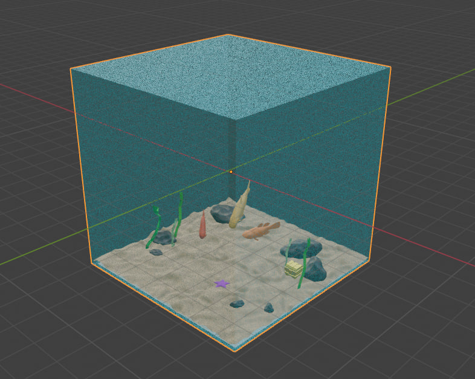

Progetto per il corso di 'Fondamenti di Computer Graphics' 2023-24 con Three.js di Cristina Napoli - Matricola 0001103127
Indice
- Introduzione progetto
- Ordinamento del programma
- Interfaccia del progetto
- Descrizione del programma
- References
Introduzione progetto
Il progetto è stato sviluppato per la materia 'Fondamenti di Computer Graphics' , corso di studio 2023/2024, con l'obiettivo di sviluppare una applicazione che utilizzasse la libreria Three.js in un progetto WebGL.
La scena è la stessa del mio precedente progetto: un paesaggio sottomarino di forma cubica, contenente alcune forme di vita che si muovono come mosse dalle correnti marine. L'idea di sviluppare lo stesso progetto ma usando Three.js, è quella di far notare quanto potente sia l'utilizzo di questa libreria, in quanto permette di implementare le stesse funzionalità del progetto precedente, ma usando molto meno codice e risparmiando molto tempo allo sviluppatore. La libreria infatti automatizza molte operazioni, fornendo oggetti di livello più alto (come schene, mesh, geometrie, materiali, shaders, etc).
I modelli presenti nella scena sono gli stessi del progetto precedente, sempre implementati su Blender e poi importati come .obj .
Ordinamento del programma
Il progetto è sempre sviluppato usando Javascript, integrato con WebGL aggiungendo la libreria Three.js .
La cartella doc contiene la documentazione del progetto, mentre la cartella myprojectThree contiene il progetto stesso, all'interno della suddetta cartella troviamo:
- La cartella icon con l'immagine di background per il canvas delle istruzioni e della GUI, e l'immagine dell'icona usata negli sliders del pannello GUI.
- La cartella oggettiScena contenente tutti i modelli della scena, organizzati in cartelle con al loro interno i filei.obj, .mtl .
- La cartella lib che contiene la libreria dat.gui.js e la cartella three con al suo interno la libreria three.js, usate per la realizzazione del progetto.
- Abbiamo poi i vari file .js, .html e .css del progetto.
Interfaccia del progetto
Caricando il file html in un qualsiasi Browser che supporta WebGL si potrà visualizzare il progetto che si mostra come segue:
- Interfaccia Desktop:
- Interfaccia Mobile:

Possiamo notare che l'interfaccia è divisa in 2 campi:
- un canvas 3D contenente la scena con tutti i suoi modelli.
- un canvas contenente un libretto delle istruzioni, un pad e una GUI.
In particolare il libretto istruzioni serve a spierare all'utente i movimenti che l'utente può eseguire, il pad permette all'utente di muoversi nella scena e la GUI contiene degli sliders e un tasto di abilitazione e disabilitazione della stessa, che permette di modificare le luci nella scena e la trasparenza dell'acqua (rappresentata dal cubo trasparente).
Descrizione del programma
La scena è gestita tramite diversi script Javascript, andiamo ad analizzarli per capire le differenze col precedente progetto:
- main.js: Il file main.js è responsabile dell'inizializzazione della scena e della dichiarazione delle variabili. Contiene le import delle classi di interesse gestite negli altri file, come 'creaModello','Movement' e 'GUI' . Contiene la funzione 'init', cuore del progetto, dove viene creato il renderer e la camera, nonché il contenitore della scena. Vengono qui chiamate le classi 'Movement' e 'CreaModello' per abilitare i movimenti e creare i modelli. Vengono settate le luci della scena, chiamata la classe 'GUI' e la funzione 'animate()' che anima gli oggetti. Inoltre sono state aggiunte le ombre agli oggetti, una pratica che con WebGL sarebbe costata molto codice, usando three.js è bastato abilitare le ombre con 'whiteDirectionalLight.castShadow = true;' nel fiel main e aggiungere 'child.castShadow = true;' e 'child.receiveShadow = true;' nel file creaModello, al momento del caricamento dei modelli.
- creaModello.js: Il file creaModello.js carica e gestisce i modelli 3D questa volta tramite OBJLoader e MTLLoader . Inoltre questa volta le texture vengono applicate a mano con 'textureLoader = new THREE.TextureLoader();'. Anche in questo caso è presente la gestione dei moviemnti dei modelli tramite la funzione 'updateMovement()', Infine è presente l'export della classe per poterla passare al file main.js .
- Movements.js: Il file Movements.js gestisce tutti i movimenti del mouse, della tastiera e del touchscreen, modificando la posizione della camera in base ai movimenti dell'utente, catturati tramite i listeners di mousedown, mouseup, mousemove, mouseout e wheel per il mouse, touchstart, touchmove e touchend per il touchscreen, e infine keydown e keyup per la tastiera. Ognuno di questi eventi chiama una funzione 'doKey' o 'handleMouse' o 'handleTouch' che gestisce il movimento relativo all'input ricevuto. Sono presenti le funzioni 'updateCameraOrbit()', 'zoomIn()' e 'zoomOut()' per muovela camera intorno al cubo e avvicinarsi o allontanarsi a/da esso. Infine è presente una 'export' per passare al main.js le classi necessarie.
- panelgui.js: Il file panelgui.js contiene una GUI customizzata interattiva, che l'utente può usare per apportare modifiche alla scena, e una canvas 2d con le istruzioni. Contiene il pad con i tasti direzionali e un pulsante di reset per tornare alla posizione originale quando necessario. Sono presenti funzioni per la gestione della modifica delle luci e della trasparenza del modello cubo. Tramite controlAlpha (input di tipo range) controlliamo l'opacità del cubo abilitando la trasparenza con 'child.material.transparent = true;' e regolando l'opacità con 'child.material.opacity = alpha;' gestiamo la trasparenza. La funzione traverse() viene utilizzata per assicurarsi che ogni componente del cubo (inclusi tutti i suoi figli) abbia la stessa impostazione di opacità. Sono presenti poi le varie funzioni per disegnare il libretto delle istruzioni, il pad e il tasto reset. Anche in questo caso alla fine è presente 'export' per passare la funzione GUI al main.js .
- index.html: Il file index.html è responsabile del caricamento di tutti i file e delle librerie. La libreria Three.js viene caricato in maniera globale insieme ai suoi file OBJLoader e MTLLoader, necessari per caricare i modelli. Non è più necessario scrivere gli shaders e ci si concentra solo nello gestire la GUI personalizzata.
- stile.css: Il file stile.css contiene invece tutta la logica per la visualizzazione estetica del progetto.